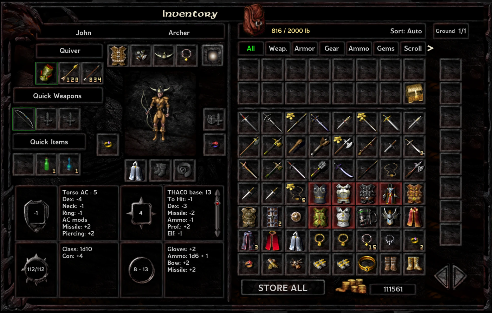
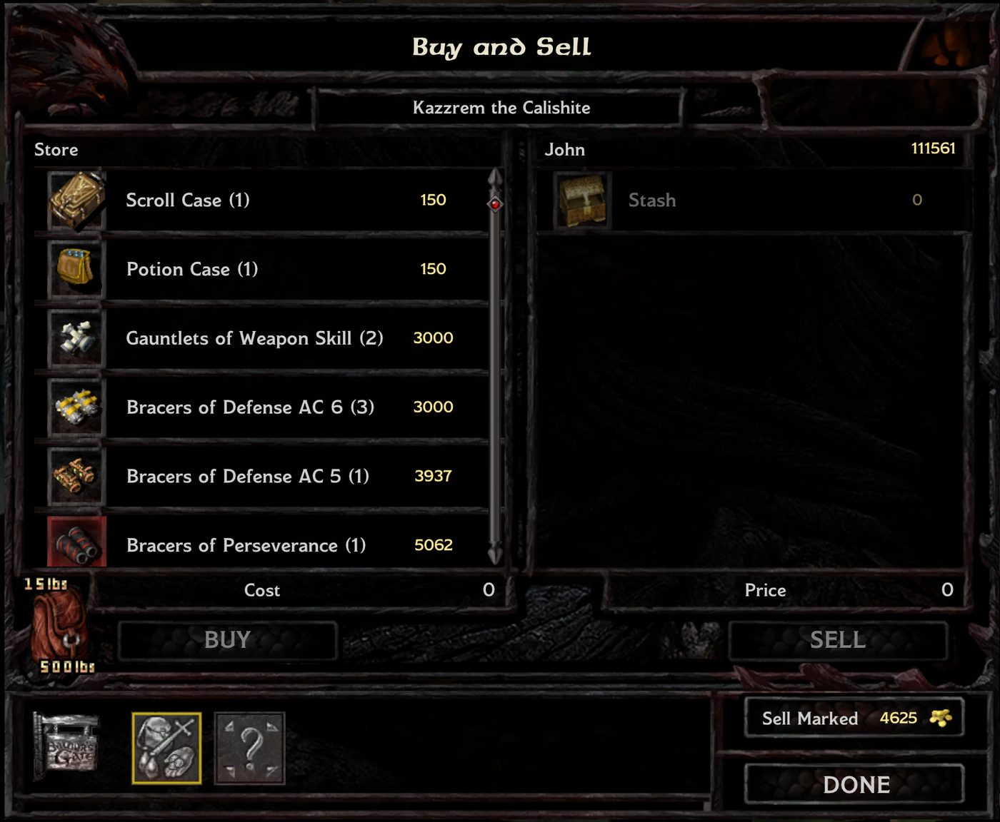
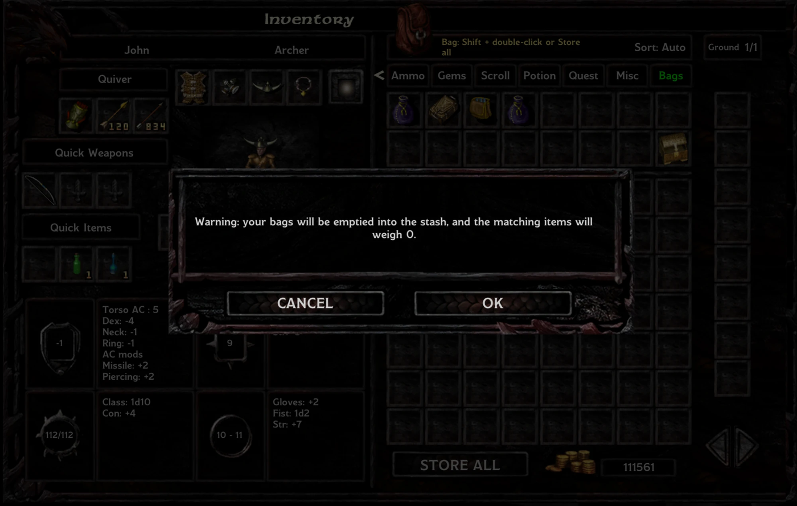

Party Stash v1.0
Un coffre infini partagé par tout le groupe, façon Pillars of Eternity, intégré à une page d'inventaire repensée. Pour Baldur's Gate: Enhanced Edition (avec ou sans Siege of Dragonspear), Baldur's Gate II: Enhanced Edition et EET.

Fonctionnalités
- Coffre partagé : tous les membres du groupe accèdent au même coffre infini sur la page d'inventaire. Les quêtes voient toujours les objets rangés dedans.
- Nouvelle page d'inventaire : sac à dos et coffre dans une seule grille défilante, une colonne pour le sol, des stats compactes en 2×2 (caractéristiques en 3 lettres).
- Onglets : Tout, Armes, Armure, Équipement, Munitions, Gemmes, Parchemins, Potions, Quête, Divers, Sacs.
- Tri : Auto (chaque onglet a son ordre : armes et armures par qualité puis CA et valeur ; parchemins par classe et niveau…), Date, Qualité, Type, Prix, Valeur/poids.
- Repères : rouge = inutilisable par le perso affiché, bleu = non identifié, + = une amélioration pour lui (ou un parchemin qu'un mage du groupe peut encore apprendre).
- Vendre cochés : Ctrl + clic sur des objets du coffre, puis vente groupée chez n'importe quel marchand, avec le total sur le bouton.
- Sacs : un sac rangé dans le coffre y est vidé et gardé dans l'onglet Sacs ; les objets du coffre qu'il peut contenir ne pèsent rien (un Sac de contenance : tout le coffre).
- Poids : le coffre compte dans la somme des charges maximales des membres ; au-delà, le groupe est ralenti.
- Deux looks : style Baldur's Gate 1 ou Baldur's Gate II, sur les deux jeux.
- Butin trié (optionnel) : au sol, dans les contenants et dans la barre de butin, les objets de quête, puis les objets sans poids, puis le reste par valeur/poids.

Marchand : Vendre cochés

Onglet Sacs
Prérequis
Jeu en version v2.7.x et EEex (installé avant). Un mod qui remplace l'écran d'inventaire (LeUI, Dragonspear UI++…) entre en conflit avec la nouvelle page.
Installation
- Installez EEex.
- Décompressez l'archive dans le dossier du jeu (là où se trouve chitin.key).
- Lancez setup-PartyStash.exe, choisissez la langue, un look (celui de votre jeu est recommandé) et, si vous voulez, Butin trié.
- Lancez le jeu avec InfinityLoader.exe (EEex).
Commandes (page d'inventaire)
| Action | Commande |
|---|
| Prendre un objet du coffre | Clic (double-clic : prendre et équiper) |
| Ranger un objet du sac à dos | Maj + double-clic, ou le déposer sur la grille du coffre |
| Tout ranger | Bouton Tout ranger, ou Espace |
| Cocher / décocher pour la vente | Ctrl + clic sur un objet du coffre, puis Vendre cochés chez un marchand |
| Description | Clic droit |
| Faire défiler la grille, les onglets, le sol | Molette, flèches |
| Ranger un sac | Maj + double-clic, ou Tout ranger (avec confirmation) |
| Vider le coffre (avant de désinstaller) | Ctrl + clic gauche sur le gros sac à côté du poids |
Désinstallation
Videz d'abord le coffre en jeu : Ctrl + clic gauche sur le gros sac à côté du poids. Vos sacs collectionnés reviennent remplis des objets qu'ils peuvent contenir ; tout le reste tombe au sol. Puis lancez setup-PartyStash.exe et désinstallez. Sinon, le contenu du coffre reste dans vos sauvegardes mais devient inaccessible jusqu'à la réinstallation du mod.
Remarques
- De Baldur's Gate à Siege of Dragonspear, le coffre suit tant que le jeu n'est pas fermé entre la fin de BG1 et le début de SoD.
- Les traductions sont les bienvenues : PartyStash/tra/.
Licence
MIT. Auteur : sad0.